Project Lead @concordion
Senior Consultant @assuritynz
What is Concordion?
Concordion is a JUnit test runner
for executable specifications
that creates beautiful living documentation
Like Cucumber?
No.
- It doesn't restrict you to using the Gherkin dialect
- Concordion is designed for creating specificaitons which are consumable by humans before machines.
Have you ever read a stale wiki page?
- Readme.md
- JavaDoc
- OpenAPI / Swagger
- Infrastructure as Code
- Automated Tests!
Use cases
- Integrating specification and checking of key scenarios (SBE/BDD/ATDD)
- Creating meaningful and maintained documentation which evolves with your product.
- Optimising design and scope through outside-in test-driven development.

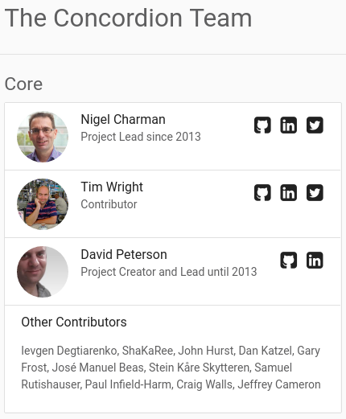 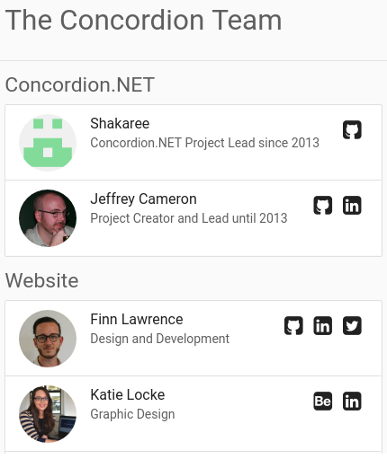 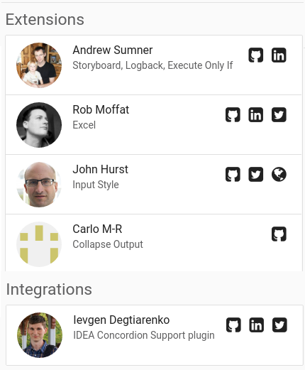
How it works
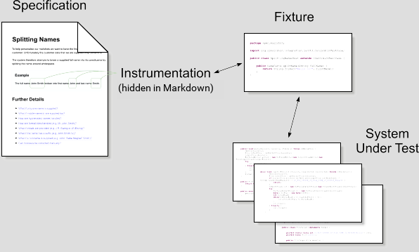Focus on Presentation By Using Markdown
Markdown is a simple, natural format for creating rich text:
## This is a H2 Header
This is a paragraph
* This is a
* bullet point list
This is an [example](example.html "Title") link
| Table | Heading |
| ----- | ------- |
| Table | Row 1 |
| Table | Row 2 |
Markdown commands
[Jane Smith](- '#name') |
|
[broken](- '#result = split(#name)') |
|
[Jane](- '?=#result.firstName') |
when previewed...
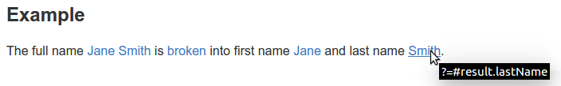Execute on a table
| [split][][Full Name][full] | [First][first] | [Last][last] |
| -------------------------- | -------------- | ------------ |
| John Smith | John | Smith |
| David Peterson | David | Peterson |
[split]: - "#result = split(#fullName)"
[full]: - "#fullName"
[first]: - "?=#result.firstName"
[last]: - "?=#result.lastName"
Verify Rows
|[_check GST_][][Sub Total][]|[GST][]|
| -------------------------- | ----: |
| 100| 15|
| 500| 75|
| 20| 2|
[_check GST_]: - "c:verifyRows=#detail:getInvoiceDetails()"
[Sub Total]: - "?=#detail.subTotal"
[GST]: - "?=#detail.gst"
Run another spec
[Shipping](shipping.html "c:run")
or
[Shipping](shipping.md "c:run")
You can run HTML specs from Markdown and vice versa
Examples
### [Basic Example](- "basic")
The full name [Jane Smith](- "#name")
is [broken](- "#result = split(#name)")
into first name [Jane](- "?=#result.firstName")
and last name [Smith](- "?=#result.lastName").
when run...
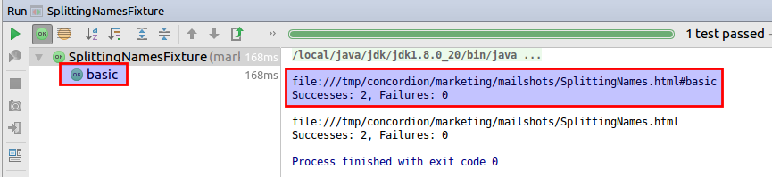Scoped Fields
Fields are now reset for each example (similar to JUnit).
If you want to keep field for whole specification:
@ConcordionScoped(Scope.SPECIFICATION)
private ScopedObjectHolder<Browser> browserHolder = new ScopedObjectHolder<Browser>() {
public Browser create() {
Browser browser = new Browser();
extension.setScreenshotTaker(new SeleniumScreenshotTaker(browser));
return browser;
}
protected void destroy(Browser browser) {
browser.close();
};
};
See concordion-scope-examples project for examples.
Markdown Editors
Markdown can be created/edited with all sorts of tools:
- Github, Bitbucket, etc
- Mindmapping tools - eg. MindMup
- IDEs - eg. Eclipse, IDEA
- Editors - eg. Notepad++, Sublime
Updated IntelliJ IDEA Plugin
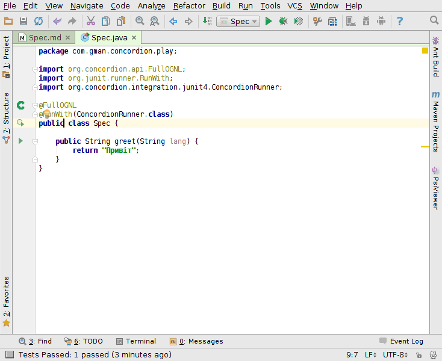IntelliJ IDEA
Concordion Support plugin
| Surround with Concordion command | Alt - Enter |
|---|---|
| Create method from usage | Alt - Enter |
| Auto complete method and variable names | Ctrl - space |
| Go to declaration | Ctrl - left-click |
| Navigate spec <-> fixture | Ctrl - Shift - s |
| Run tests (from spec or fixture) | Ctrl - Shift - F10 |
HTML only
| Find usages | Ctrl - F7 |
|---|---|
| Rename | Shift - F6 |
Demo
Extensions
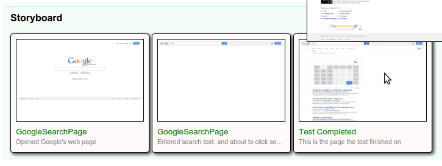 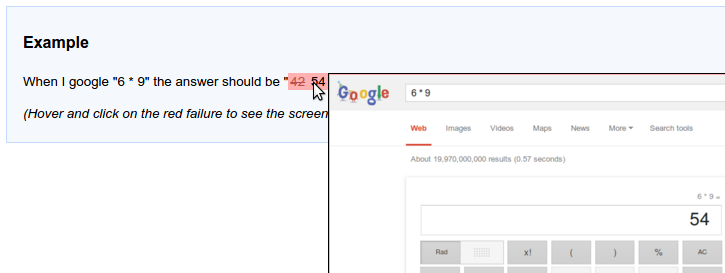 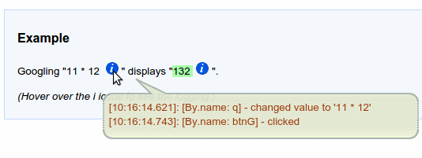 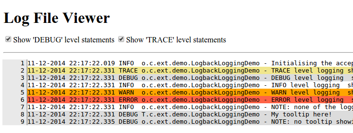Excel,
Parallel Runner,
Storyboard,
Screenshot,
Logging Tooltip,
Log Viewer
and more...
Learn more
This presentation - http://tinyurl.com/concordion2-0
 This work is licensed under a Creative Commons Attribution 4.0 International License
This work is licensed under a Creative Commons Attribution 4.0 International License